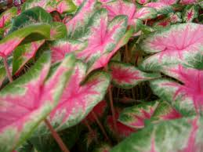

Caladium

Caladium (Caladium de la famille des Aracées)
Très toxique plus toxicité de contact.
Partie toxique pour les chats en général et le Korat en particulier :
Toute la plante.
Symptômes du processus pathologique :
Irritant pour la peau et les muqueuses. Brûlure, hyper salivation gène respiratoire vomissements + Complications rénales.
Origine de la toxicité (principe actif) :
Oxalate de calcium et toxiques méconnues.